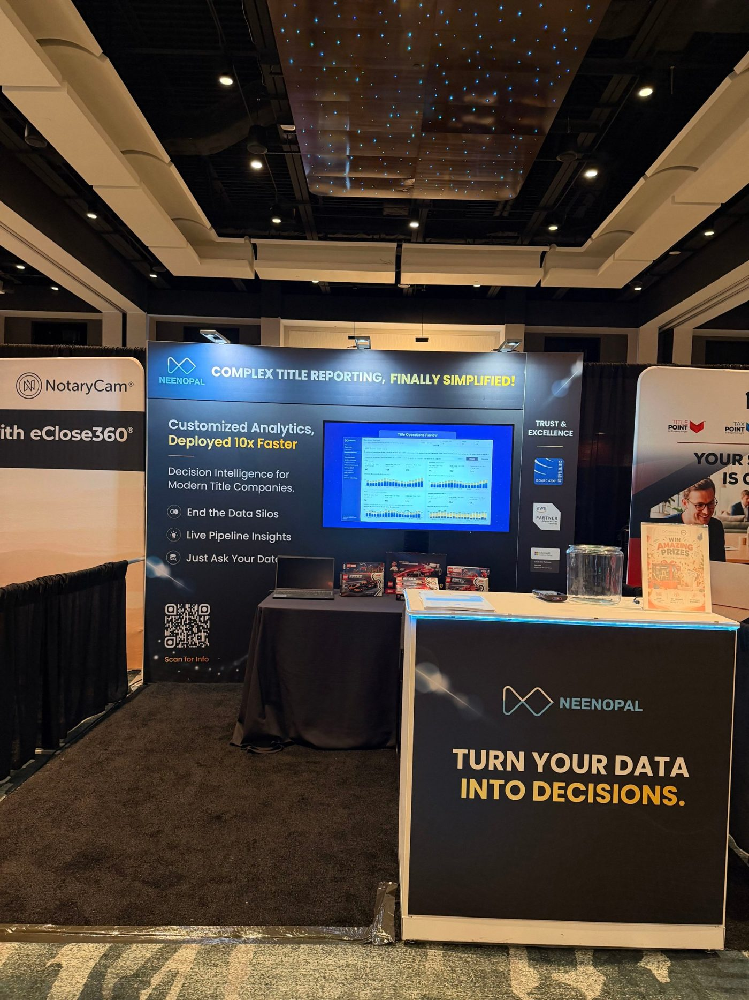
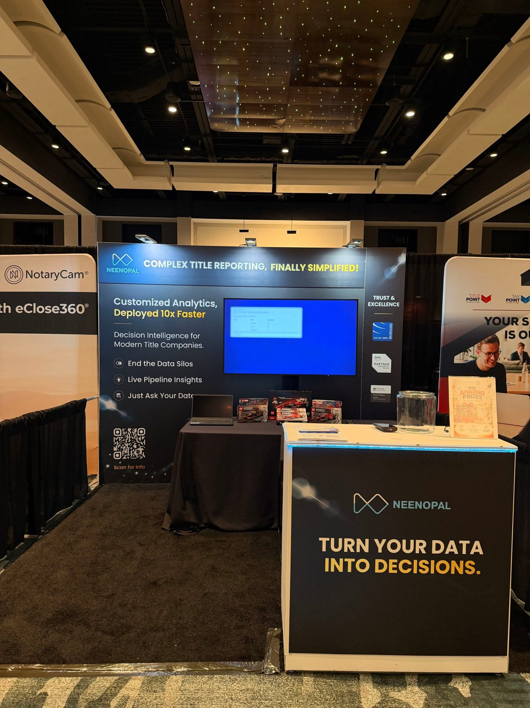
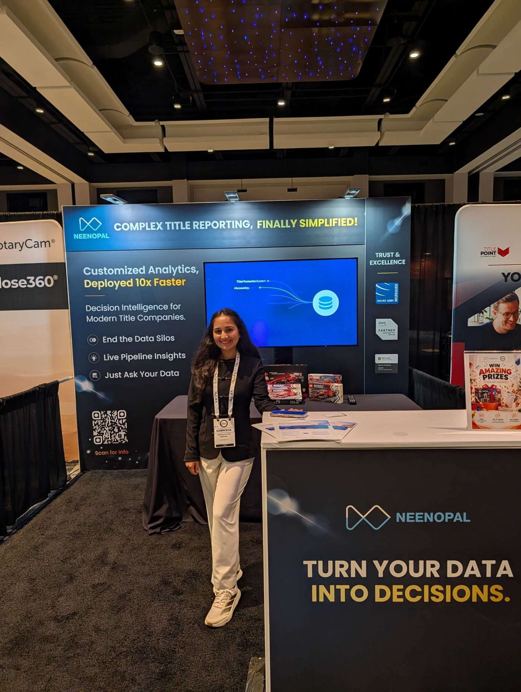
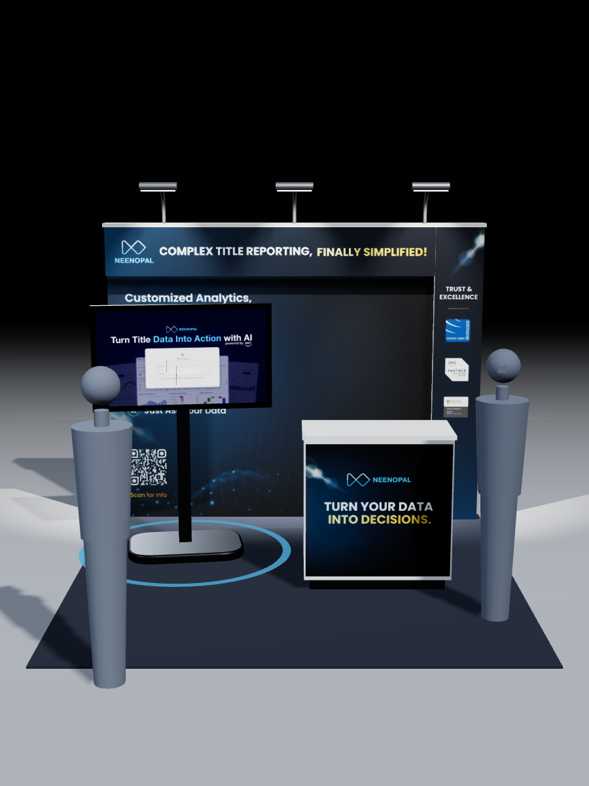

NeenOpal's booth at ALTA ONE 2026 was a rented 10′ × 10′ Freeman exhibit. Before a single graphic went to print, I wanted to see how our artwork would actually sit on it. This page shows how the interactive 3D model came together, including the wrong turns, and how the real booth looked in Scottsdale.
We're exhibiting at ALTA ONE with the Freeman Excite 1 10×10. I have backdrop and L-panel artwork, plus a counter and a TV. Can you build me a 3D model so I can see how it all sits in the booth before we print?
Yes. I'll pull the exhibit's real dimensions from the Freeman and ALTA ONE listings first, so the model is built from published numbers rather than guesses. The goal is one HTML file you can open anywhere, with your artwork mapped onto the right panels.
From the ALTA ONE store listing, word for word:
The Monitor options come from Encore's “Build Your Own Monitor Package”: 23″ without stand, 55″ or 80″ with floor stand. I calculated the active screen area of each from its diagonal at 16:9.
Freeman doesn't publish the header dimensions anywhere. So I measured the transparent cutout in your backdrop PNG against an assumed 120″ × 96″ wall. The margins came out equal at about 20″.
The brief I was given says the backdrop is a full 10′ × 10′ and the L-panel is 1′-6″.
I measured your LPanel.png: exactly 18.00″ on both legs, so that matches. But a 10′ tall wall contradicts the listing's 8′ H, and most shows cap inline booths at 8′.
Here's Freeman's graphic spec sheet for the 10×10.
This is the authoritative source, and it corrected three things. The sheet prints at 200%, so I halved the artboards. Final panels:
| Panel | Size | Substrate |
|---|---|---|
| A · wall | 117″ × 93″ | Fabric |
| C · top band | 102″ × 15″ | Ultraboard |
| D · right column | 15″ × 93.3125″ | Ultraboard |
| G · counter front | 38.125″ × 35.75″ | PVC |
Two surprises: the top band stops short of the right column, and the column runs full height instead of starting under the band. Same silhouette, different subdivision.
Lucky break: the visible window of the wall stayed 102″ × 78″ across rounds two and three, so your backdrop artwork needed no rework.
Freeman's own design note applies directly to your artwork:
In practice that's the end of your tagline and the QR code, where the two panels meet 43.5″ from the left edge.
It only changes how deep the shadow line looks in renders, never a print dimension. It's now listed as the model's one real assumption.
Your artwork files matched the modelled window to within a pixel (aspect 1.3081 vs 1.3077). The L-panel cutout measures 18.03″ on both sides. I also verified the file makes zero external network requests, and that uploading C and D separately renders identically to slicing one full-wall file (mean pixel difference 0.19 / 255).
Putting people and furniture in the model surfaced things a flat mock-up hides:
Perfect. Sending the final artwork to Freeman. See how it came out →
Scottsdale, 12–14 October. Photos of the finished NeenOpal stand on the show floor.



Same front-on angle. The model carries the final print artwork on the backdrop, header, side column and counter. The monitor shows the Title AI Agent slide. The two figures are stand-ins.

At NeenOpal, my team designs the booth graphics for industry events. Until recently that meant flat artwork and a guess at how it would look once printed and installed. This time we could see it first.
Flat artwork can't tell you whether text will be readable, where the TV should sit, or whether visuals line up with the booth's structure. A 3D model at the booth's exact dimensions, with our graphics on the walls, can.
I don't know 3D software, and learning it would have taken days. With Claude, the whole setup took under two hours.
We could judge how much text each wall could hold, find the right spot for the TV, and see how everything worked together as one space.
Our founders could see exactly what they were signing off on. Once the booth was built, they told us they thought it was one of the best at the event.
It's a small thing, but it turned a guessing game into something we could check before committing to it.